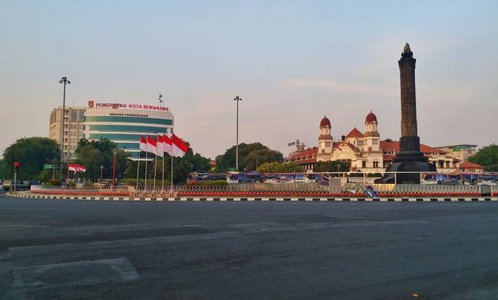
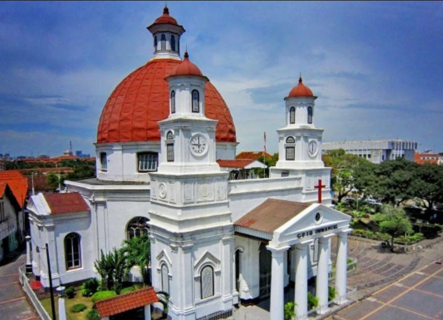

Tugu Muda
Tugu Muda adalah salah satu pilihan favorit wisata
di Semarang. Terletak di tengah kota,tempat ini menjadi
salah satu ikon Kota Semarang.
Didirikan untuk mengenang Pertempuran Lima Hari,monumen
ini sudah berumur kurang lebih 47 tahun sejak didirikan
pada 20 Mei 1953

Gereja Blenduk
Gereja Blenduk (Gereja Protestan Indonesia Barat Immanuel Semarang)
adalah salah satu bangunan peninggalan era kolonial Belanda.
Gereja ini terletak di kawasan Kota Lama Semarang
,sebutan untuk wilayah dengan bangunan peninggalan era kolonial
Belanda
Bangunan yang terkenal karena bentuk atapnya seperti kubah (Jawa:mbelenduk)
ini didirikan pada tahun 1753